SGLang Omni Refactor Tracking#
Follows from sglang#16546. Addresses problems in #188.
Table of contents#
Architecture#
System Overview#
The request lifecycle: HTTP and WebSocket requests enter through the serving layer, the Client adapts them into Coordinator calls, the Coordinator drives one or more pipeline Stages, and results stream back along the same path.
flowchart LR
subgraph entry["Serving entry point"]
HTTP["HTTP API<br/>/v1/chat/completions<br/>/v1/audio/speech<br/>/v1/models, /health"]
WS["WebSocket<br/>/v1/realtime"]
end
Client["Client<br/>endpoint to Coordinator adapter"]
Coordinator["Coordinator<br/>lifecycle, routing, merge, abort"]
subgraph pipeline["Pipeline: one or more Stages"]
Stage["Stage<br/>ZMQ control plane, relay/local data plane"]
Scheduler["Scheduler<br/>batch, KV cache, dispatch"]
Runner["ModelRunner<br/>forward, sampling, hooks"]
end
HTTP --> Client
WS --> Client
Client -->|submit / stream| Coordinator
Coordinator -->|route to entry stage| Stage
Stage --> Scheduler
Scheduler -->|run_batch| Runner
Runner -.->|output| Scheduler
Stage -.->|stream / final| Coordinator
Coordinator -.->|response / SSE| Client
Client -.->|HTTP / WS reply| HTTP
Text form: HTTP API / WebSocket → Client → Coordinator → Stage → [Scheduler → ModelRunner → forward].
Layer Responsibilities#
Layer |
Responsibility |
Model-aware? |
|---|---|---|
Coordinator |
Request lifecycle, routing to entry stage, multi-terminal merge, abort broadcast |
No |
Stage |
IO shell — ZMQ control plane, transport data plane, fan-in aggregation, stream routing |
No |
Scheduler |
Batch selection, KV cache management, compute dispatch |
Partially |
ModelRunner |
Forward pass, sampling, model-specific hooks |
Yes |
Directory Layout#
sglang_omni/
├── pipeline/ # Inter-stage orchestration (model-agnostic)
├── scheduling/ # Scheduling loops (OmniScheduler, SimpleScheduler)
├── model_runner/ # Model runner base + shared FeedbackARModelRunner
├── models/ # Model definitions + pipeline configs
├── config/ # Pipeline config schema + compiler
├── relay/ # Data transfer backends (SHM, NCCL, NixL)
├── serve/ # HTTP server, OpenAI API
├── client/ # Client library
└── proto/ # Message types
Class Diagram#
classDiagram
class Coordinator {
+entry_stage: str
+register_stage(name, endpoint)
+submit(request_id, request) result
+stream(request_id, request) AsyncIterator
+abort(request_id) bool
+run_completion_loop()
}
class Stage {
+name: str
+control_plane: StageControlPlane
+relay: Relay
+scheduler: Scheduler
+start()
+run()
+stop()
}
class Scheduler {
<<interface>>
+inbox: Queue~IncomingMessage~
+outbox: Queue~OutgoingMessage~
+start()
+stop()
+abort(request_id)
}
class OmniScheduler {
+request_builder: Callable
+recv_requests()
+process_input_requests()
+run_batch()
}
class SimpleScheduler {
-compute_fn: Callable
}
class Code2WavScheduler {
-model: Code2Wav
}
class ModelRunner {
+execute(scheduler_output) ModelRunnerOutput
+before_prefill()* hook
+before_decode()* hook
+custom_prefill_forward()* hook
+custom_decode_forward()* hook
+post_prefill()* hook
+post_decode()* hook
}
class ThinkerModelRunner {
+custom_prefill_forward(): inject multimodal embeds
}
class FeedbackARModelRunner {
+write_buffers_fn: Callable
+extract_output_fn: Callable
+prefill_forward_fn: Callable
}
Coordinator --> Stage : routes requests to
Stage --> Scheduler : inbox/outbox
Scheduler <|-- OmniScheduler
Scheduler <|-- SimpleScheduler
Scheduler <|-- Code2WavScheduler
OmniScheduler --> ModelRunner : run_batch delegates to
ModelRunner <|-- ThinkerModelRunner
ModelRunner <|-- FeedbackARModelRunner
End-to-end example: Fish Audio S2-Pro#
The diagram below traces a single /v1/audio/speech request through every layer described above, using the 3-stage Fish S2-Pro pipeline as a concrete instance. The left column is the request lifecycle (HTTP → Client → Coordinator and back); the right column is the three pipeline stages, each showing its scheduler, model runner, and the ZMQ (control-plane) vs relay (data-plane) hand-offs between them.

It is a worked example of the abstractions in this section: the Coordinator routes and merges, each Stage owns one Scheduler, and the model-specific work lives entirely in the runner + callbacks — the rest is reused framework code.
Pipeline Layer#
HTTP/Websocket#
HTTP and WebSocket are SGLang-Omni’s externally exposed request endpoints.
HTTP:
POST /v1/chat/completionsPOST /v1/audio/speechGET /v1/modelsGET /health
WebSocket:
WS /v1/realtime
HTTP covers the request/response endpoints; the WebSocket endpoint (/v1/realtime, see Design Decision History § PR #385) is full-duplex for streaming audio in and server events out. There is no application-level HTTPS/TLS layer: the server binds plain HTTP via uvicorn, and TLS is expected to terminate at a reverse proxy or load balancer in front of it.
Client#
The Client is the adapter between the HTTP/WebSocket endpoints and the Coordinator: it is where each endpoint is actually implemented.
For example, /v1/audio/speech refines the request, calls generate, and returns the refined output.
Code part:
async for chunk in self.generate(request, request_id=request_id):
if chunk.audio_data is not None:
audio_chunks.append(chunk.audio_data)
if chunk.sample_rate is not None:
sample_rate = chunk.sample_rate
last_chunk = chunk
Coordinator#
Global request router. Tracks the request lifecycle across stages.
Routes new requests to the entry stage
Collects completions from terminal stages
Merges results when multiple terminal stages exist (e.g.,
decode+code2wav)Broadcasts abort to all stages
Stage#
IO shell. Every stage has one scheduler (no branching). Handles all inter-stage communication.
class Stage:
def __init__(self, name, control_plane, relay, route_fn,
input_handler, scheduler, stream_targets,
same_gpu_targets, same_process_targets, local_dispatcher):
self.scheduler = scheduler # always present
Responsibilities:
Control plane (ZMQ): receive
SubmitMessage,DataReadyMessage,AbortMessageData plane: read/write tensors via relay, CUDA IPC stream fast path, or same-process LOCAL_OBJECT dispatch
Input aggregation: wait for multiple upstream stages before dispatching (
AggregatedInput)Stream routing: receive/send streaming chunks (hidden states, codec codes)
Dispatch: push all messages into
scheduler.inbox, drainscheduler.outbox
One code path. Stage never checks scheduler type.
Inter-Stage Communication#
sequenceDiagram
participant A as Stage A
participant Relay as Relay / Local Dispatcher
participant ZMQ as Control Plane (ZMQ)
participant B as Stage B
A->>Relay: write(tensors) or send Python reference
A->>ZMQ: send(DataReadyMessage) for relay/IPC
ZMQ->>B: recv(DataReadyMessage)
B->>Relay: read(tensors) or receive local object
Control plane (ZMQ): small messages — Submit, DataReady, Abort, Shutdown. PUB/SUB for abort broadcast, PUSH/PULL for point-to-point.
Data plane: large tensors normally go through relay. Pluggable backends: SHM (single machine), NCCL (multi-GPU), NixL (RDMA multi-node), Mooncake. Same-GPU stream edges use CUDA IPC automatically. Same-process safe edges may use LOCAL_OBJECT and pass the original Python object by reference.
Streaming: hidden states / codec codes flow via
DataReadyMessagewithchunk_idandis_donefields, parallel to normal result routing.
LOCAL_OBJECT is a Stage-level fast path, not a relay backend. It is used only
when runtime prep knows sender and receiver live in the same OS process. Full
payload dispatch can use it for single-target routes; projected fan-out can use
it only when each projector returns a StagePayload with an isolated data
container. The receiver sees the same Python object references, including nested
tensors and metadata, so downstream code must treat them as read-only until the
receiver has finished with the request.
The split between control and data planes is the core architectural decision: ZMQ stays out of the tensor path (it carries only the small SubmitMessage / DataReadyMessage / AbortMessage coordination messages), the relay (SHM/NCCL/NIXL/Mooncake) stays out of the coordination path, and either can be swapped independently.
Why not Ray?#
The thinker→talker relationship is fundamentally producer–consumer: thinker produces hidden states / text tokens, talker consumes them and emits audio codes. Structurally this is the same pattern as RL training (actor produces trajectories, learner consumes them), where Ray is the dominant orchestration layer. So it is a fair first-principles question whether we should use Ray for inter-stage scheduling instead of hand-rolling ZMQ + relay.
We chose not to. Ray’s overhead — extra runtime, object-store semantics, and operational footprint — is significant for our shape: a small fixed number of stages on a small fixed number of GPUs, with no autoscaling. ZMQ + relay covers the topology with much less moving infrastructure. The decision is revisitable; nothing in the pipeline layer hard-bakes “no Ray” beyond the relay backend list.
relay_io Utility Module#
Utility module providing:
User-facing API
write_payload/read_payload— fullStagePayloadserialization via relaysend_stream_chunk— handles same-GPU IPC vs cross-GPU relay, NIXL credit deadlock avoidance
Same-process dispatch
LocalStageDispatcher— directly calls target stage receive methods with Python object references for LOCAL_OBJECT payloads and stream chunks
Internal-facing API
write_blob/read_blob— raw tensor transfer for streaming chunksextract_tensors/restore_tensors— recursive tensor extraction from nested dicts
API layering. Stages only call the user-facing API. write_blob / read_blob get wrapped by send_stream_chunk for cross-GPU transfer; extract_tensors / restore_tensors get used inside write_payload / read_payload to pull tensors out of nested dicts. The internal layer exists so the user-facing surface stays small.
Asymmetric stream API — no recv_stream_chunk. Only send_stream_chunk exists because the sender has real decisions to make (same-GPU IPC vs cross-GPU relay, NIXL credit management), while the receiver just calls read_blob from the stage’s main message loop. Wrapping a one-liner into recv_stream_chunk would add a layer without adding any value.
Scheduling Layer#
All schedulers share the same interface: inbox, outbox, start(), stop(), abort().
OmniScheduler — Composition with SGLang#
For AR stages. Subset of SGLang Scheduler — reuses get_next_batch_to_run(), run_batch(), process_batch_result(), event_loop_normal(). (Overlap scheduling ended up unsupported: the Req.inflight_middle_chunks decrement lags one iteration on that loop, so _event_loop_overlap refuses to run.)
Reused from SGLang:
get_next_batch_to_run(),process_batch_result(),self_check_during_idle()— KV cache management, prefill/decode scheduling, tree cache, dLLM supportOverridden:
init(skip ZMQ/tokenizer/metrics),recv_requests()(drain inbox, route stream chunks to per-request state),process_input_requests()(request_builderconversion),run_batch()(delegate to ModelRunner),send_to_tokenizer()(no-op)Not used from SGLang: ZMQ channels, tokenizer init, grammar backend, metrics exporter, disaggregation, LoRA, speculative decoding, PP, watchdog
Runs in a dedicated thread. Stage communicates via thread-safe queues.
Composition boundary with SGLang#
Composing on top of SGLang’s Scheduler is the right call, but only if we pin the boundary deliberately — RL forks of SGLang have hit upgrade pain by letting composition drift into a de facto fork. Three rules govern the boundary:
Pin, don’t track. Tracking SGLang
mainfits the same-umbrella relationship, but only if CI runs against the real Scheduler rather than mocks. Running that CI is currently too expensive, so we pin.Minimize reuse surface. Treat
PrefillManagerandDecodeManageras black boxes — public methods only, no reads or writes of internal attributes. The moment we touch internals, composition becomes a fork.Upstream-first, when affordable. If OmniScheduler needs something SGLang doesn’t cleanly expose, the preferred fix is a hook or factored-out method in SGLang
mainrather than a downstream patch. Today the cost of upstream PRs is high enough that we don’t routinely do this; it remains the long-term direction.
CodePredictor is placed under Talker, but whether ThinkerScheduler and CodePredictorScheduler need a separate documented split (their KV cache shapes are quite different) is tracked in #538 §2.1.
Error handling#
Previously the same OOM produced different externally-visible behaviors across models: S2-Pro and Voxtral returned HTTP 500 (correct), Ming-Omni returned HTTP 200 with waveform=None (silent failure), Qwen3-Omni returned HTTP 200 with a zero tensor (looks like a valid waveform downstream). The first two were correct only because they did nothing; the latter two failed because broad except Exception blocks in the executor swallowed the error. The fix lives at the Scheduler layer (#449):
Unified catch in
run_batch()— Scheduler wraps forward, catches exceptions, marks the request failed, propagates via outbox → Coordinator → HTTP 500 for non-streaming. For streaming responses HTTP headers are already flushed before the first chunk, so HTTP 500 cannot fire mid-stream — successful streams terminate with an explicit completion sentinel frame, and failed streams abort the connection before emitting it. Absent sentinel + premature close is the client-side failure signal.Model executors forbidden from writing
except Exception— model-side code is pure functional and exceptions propagate naturally. Specific expected exceptions must catch specific types, never baseException. Enforced via lint rule, not review discipline: rule 1’s catch is path-local torun_batch(), so a broad catch inadd_requestor embed-load paths slips past it.Fallbacks architecturally disallowed — executor either succeeds or hands off to Scheduler. No third path returning a “fake success” indistinguishable from a real result.
CI fault injection — inject OOM and verify the correct failure signal per model: HTTP 500 for non-streaming, sentinel-absent + premature close for streaming. Detection complements but does not substitute for rule 2’s lint enforcement.
The short-term bridge fix (#302) landed without an is_oom_error() helper, since that helper would become dead code once the Scheduler-layer catch lands.
SimpleScheduler#
For non-AR stages (preprocessing, encoders, aggregate, decode). No KV cache, no batching. Just inbox.get() → fn(data) → outbox.put(). Supports inbox/outbox and basic forward operation; batched processing supported where useful.
Code2WavScheduler#
Streaming vocoder. Handles:
new_request→ initstream_chunk→ accumulate + decodestream_done→ flush + output
Message Types#
class IncomingMessage:
request_id: str
type: "new_request" | "stream_chunk" | "stream_done"
data: Any
class OutgoingMessage:
request_id: str
type: "result" | "stream"
data: Any
target: str | None # for stream: downstream stage name
Model Runner + Callbacks#
ForwardBatch → before_*() → custom_*_forward() or standard forward → post_*() → sample/output
↑ hook ↑ explicit custom path ↑ hook
Runner |
Used by |
Hook behavior |
|---|---|---|
ThinkerModelRunner |
Qwen3 / Ming thinker |
|
FeedbackARModelRunner |
Qwen3 talker, Fish TTS |
|
CUDA Graph and torch.compile are class-shareable rather than configured model by model — the ModelRunner abstraction exists in part to make this the default; special models can still override.
DiffusionModelRunner is no longer speculative — Ming-Omni (#236) requires it, and image-gen diffusion is functionally working. It should be added as a first-class runner type alongside ThinkerModelRunner and FeedbackARModelRunner later.
ModelRunner (Base)#
Shared execute pipeline for all AR models.
class ModelRunner:
def execute(self, scheduler_output):
forward_batch = ForwardBatch.init_new(...)
if is_prefill:
self.before_prefill(forward_batch, ...)
batch_result = self.custom_prefill_forward(forward_batch, ...)
else:
self.before_decode(forward_batch, ...)
batch_result = self.custom_decode_forward(forward_batch, ...)
if batch_result is None:
batch_result = self.tp_worker.forward_batch_generation(forward_batch)
if is_prefill:
self.post_prefill(batch_result, ...)
else:
self.post_decode(batch_result, ...)
# sample, logit processing, output extraction
return ModelRunnerOutput(...)
Shared: ForwardBatch construction, sampling, repetition penalty, codec suppression, output processing.
The earlier single prepare_forward hook was misleading: it did two unrelated things at once, mutating the batch and short-circuiting to a custom forward result. Those concerns are now split, as the execute skeleton above shows: phase-aware before_prefill / before_decode mutate the batch in place, and explicit custom_prefill_forward / custom_decode_forward hooks return a forward result (or None to fall through to the standard forward). Landed in #558.
ThinkerModelRunner#
Injects multimodal embeddings (image / video / audio) + deepstack before forward.
class ThinkerModelRunner(ModelRunner):
def custom_prefill_forward(self, ...):
# Inject multimodal embeds into forward_batch
...
FeedbackARModelRunner#
Shared model runner for all AR + codebook models (Qwen3 talker, Fish TTS, future models) whose feedback loop is self-contained within a single ModelRunner instance — both the feedback producer and the receiver live inside one decode step. Cross-stage feedback (producer and receiver in separate schedulers, communicating via relay) is out of scope for this abstraction and would need a different design; today nothing requires it, but stating the boundary up front prevents future contributors from bending the abstraction to cover topologies it was not designed for.
The model’s forward() handles backbone + secondary head internally. This runner writes / reads model buffers around forward.
class FeedbackARModelRunner(ModelRunner):
def __init__(self, tp_worker, output_processor, outbox, *,
write_buffers_fn, extract_output_fn, prefill_forward_fn=None):
...
def before_decode(self, ...):
if decode:
self._write_buffers(model, schedule_batch, requests)
def custom_prefill_forward(self, ...):
if prefill and self._prefill_forward:
return self._prefill_forward(tp_worker, forward_batch, ...)
return None
def post_prefill(self, ...):
self._extract_output(model, schedule_batch, requests, outbox)
def post_decode(self, ...):
self._extract_output(model, schedule_batch, requests, outbox)
Model-specific behavior via three callbacks:
write_buffers_fn: write previous step’s feedback into model buffersextract_output_fn: read codes / feedback from model after forwardprefill_forward_fn: custom forward for prefill (optional)
Callback pattern: bare functions vs Strategy object#
Each model currently provides three bare functions that get passed in individually. This works, but the three are semantically coupled — they all operate on the same model’s buffers — and nothing at the type level enforces that coupling.
A lightweight improvement is to collect them into a Strategy object:
class FeedbackStrategy(Protocol):
def write_buffers(self, model, schedule_batch, requests) -> None: ...
def extract_output(self, model, schedule_batch, requests, outbox) -> None: ...
def prefill_forward(self, tp_worker, forward_batch, ...) -> Optional[BatchResult]: ...
class QwenTalkerStrategy:
def write_buffers(self, model, schedule_batch, requests):
# feedback_embeds + trailing/pad → model._feedback_buffer
def extract_output(self, model, schedule_batch, requests, outbox):
# model._output_codes → outbox, _output_embeds → feedback
def prefill_forward(self, tp_worker, forward_batch, ...):
# projected input_embeds prefill
class FishTTSStrategy:
def write_buffers(self, ...): ...
def extract_output(self, ...): ...
def prefill_forward(self, ...): ...
The bare-function form is what ships today; the Strategy form is the recommended evolution if a third self-contained model joins. The trade-off is mostly typing surface vs explicitness — neither blocks the other.
Callback Pattern#
Each model provides a callbacks.py with three functions:
Qwen3 Talker — models/qwen3_omni/callbacks.py:
write_talker_buffers:feedback_embeds+ trailing/pad →model._feedback_bufferextract_talker_output:model._output_codes→ outbox,_output_embeds→ feedbacktalker_prefill_forward: projectedinput_embedsprefill
Fish TTS — models/fishaudio_s2_pro/callbacks.py:
write_fish_buffers: codebook values →model._vq_codesextract_fish_output:model._output_codes→ per-request outputfish_prefill_forward: VQ embedding injection intoinput_embeds
Adding a third model = write a new callbacks.py with three functions.
Model.forward(): One Decode Step (AR + Codebook)#
Both Qwen3 talker and Fish TTS follow the same internal pattern:
Read previous step’s feedback from model buffers (written by
FeedbackARModelRunner)AR backbone → hidden states → logits
Sample first code from logits
Secondary head predicts remaining codebook layers autoregressively
Store combined output → buffers for next step
Output: multi-layer codes + feedback
The model class handles steps 1–6 inside forward(). FeedbackARModelRunner handles writing (before) and reading (after).
Model Directory Convention#
Every model follows the same file structure:
models/<model_name>/
├── config.py — Pipeline config (stage definitions, GPU placement)
├── stages.py — Stage factories (returns callable or OmniScheduler)
├── routing.py — Stage routing functions (which stage follows which)
├── request_builders.py — Inter-stage data transform (build engine requests)
├── payload_types.py — Model-specific pipeline state
├── callbacks.py — FeedbackARModelRunner callbacks
├── __init__.py
└── components/ — Model-specific torch modules, preprocessors, encoders
routing.py and request_builders.py are kept separate because they answer different questions: routing.py decides which stage runs next (topology, often deterministic), while request_builders.py formats data for models that need special input shapes — e.g. the Qwen3-Omni thinker → talker request transform. Localizing the model-specific format logic in request_builders.py keeps routing.py thin and framework-shaped.
Qwen3-Omni#
models/qwen3_omni/
├── config.py — 8-stage speech, 6-stage text
├── stages.py — 8 factories
├── routing.py — 8 routing functions
├── request_builders.py — build thinker/talker/encoder requests
├── payload_types.py — Qwen3OmniPipelineState, Qwen3OmniEvent, ThinkerOutput
├── callbacks.py — write_talker_buffers, extract_talker_output, talker_prefill_forward
├── hf_config.py — HF config classes
├── merge.py — Merge 3 encoder outputs for thinker
├── components/
│ ├── thinker.py — Model loader/wrapper (Qwen3OmniSplitThinker)
│ ├── thinker_model.py — SGLang thinker model definition
│ ├── talker.py — SGLang talker model (fused MTP)
│ ├── preprocessor.py — Tokenize, load media, apply HF processor
│ ├── image_encoder.py — Image tower
│ ├── audio_encoder.py — Audio tower
│ ├── talker_input.py — Build talker prefill
│ ├── streaming_detokenizer.py — Streaming text detokenizer scheduler
│ ├── code2wav_scheduler.py — Vocoder streaming scheduler
│ └── common.py — Shared helpers
Speech pipeline (8 stages): preprocessing → image_encoder → audio_encoder → aggregate → thinker → decode → talker → code2wav. The image_encoder and audio_encoder stages run in parallel — the arrow above is for layout, not sequencing — and the design leaves room for offloading either tower to CPU.
The “tower” terminology for image/audio encoders follows the official Qwen3-Omni names; we keep that vocabulary here rather than introducing a divergent local one.
PipelineState and OmniEvent were ambiguous — both read as framework-level types but were model-specific. Resolved by model-qualified payload names (Qwen3OmniPipelineState / Qwen3OmniEvent, and the MingOmni* / LLaDA2Uni* variants) in #558.
Fish Audio S2-Pro#
models/fishaudio_s2_pro/
├── config.py — 3-stage TTS
├── stages.py — 3 factories
├── routing.py — 3 routing functions
├── request_builders.py — build_sglang_tts_request, apply_tts_result
├── payload_types.py — S2ProState
├── callbacks.py — write_fish_buffers, extract_fish_output, fish_prefill_forward
├── sglang_model.py — SGLang model registration
├── tokenizer.py — Tokenizer wrapper
└── fish_speech/ — Model definitions (text2semantic, DAC codec)
Pipeline (3 stages): preprocessing → tts_engine → vocoder
Declarative Config#
Example#
stages = [
StageConfig(name="preprocessing",
factory="...create_preprocessing_executor",
route_fn="...routing.preprocessing_next"),
StageConfig(name="image_encoder",
factory="...create_image_encoder_executor",
gpu=0, next="mm_aggregate"),
StageConfig(name="mm_aggregate",
factory="...create_aggregate_executor",
wait_for=["preprocessing", "image_encoder", "audio_encoder"],
merge_fn="...merge_for_thinker",
next="thinker"),
StageConfig(name="thinker",
factory="...create_thinker_executor",
factory_args={"speech_enabled": True},
gpu=0, next=["decode", "talker_ar"],
stream_to=["talker_ar", "decode"]),
StageConfig(name="decode", factory="...create_decode", terminal=True),
StageConfig(name="code2wav", factory="...create_code2wav", gpu=1, terminal=True),
]
Realtime streaming-input support is a separate workstream owned by #385 and is intentionally outside the scope of this config example.1Realtime streaming-input semantics. The /realtime endpoint shipped in PR #385 (merged 2026-05-18) — WebSocket-backed streaming-in audio with SSE-style server events, aligned with OpenAI’s realtime interface. Detailed protocol — chunk framing, partial-result emission, cancellation semantics — is documented in #385’s session-state-machine implementation rather than mirrored here.
Routing rule: exactly one of next, route_fn, or terminal=True. There is no “one thinker, multiple talkers” fan-out — talker decode requires the thinker’s hidden state as prefix, so driving two independent talkers from the same prefix carries no useful semantics. Derived from stages: entry_stage (first stage), terminal_stages, gpu_placement, relay device.
StageConfig reference#
Field |
Type |
Default |
Description |
|---|---|---|---|
name |
str |
required |
Unique stage identifier |
factory |
str |
required |
Dotted import path to factory function |
factory_args |
dict |
{} |
Args forwarded to factory (model_path, gpu_id auto-injected) |
next |
str | list[str] |
None |
Static routing: downstream stage(s). Replaces routing functions for most stages |
route_fn |
str |
None |
Dynamic routing: dotted path to fn(request_id, output) → str | list[str] | None |
terminal |
bool |
FALSE |
Terminal stage — no downstream. Coordinator collects the result here |
gpu |
int | list[int] |
None |
GPU id(s). None = CPU stage. List for TP (one GPU per rank) |
tp_size |
int |
1 |
Tensor parallelism ranks. Must match len(gpu) if gpu is a list |
wait_for |
list[str] |
None |
Fan-in: wait for these upstream stages before dispatching |
merge_fn |
str |
None |
Dotted path to fn(dict[str, StagePayload]) -> StagePayload. Required with wait_for |
stream_to |
list[str] |
[] |
Stream hidden states / codes to these stages (parallel to normal routing) |
relay |
RelayConfig |
None |
Override relay settings. Auto-inferred from gpu if not set |
route_fn contract#
route_fn has narrow utility: Qwen3-Omni and Fish S2 Pro are fully covered by next + stream_to. It is only needed when the hidden state itself carries a modality tag and the downstream branch must be decided from the data (e.g. Ming, where the output if/else’s into a video or audio head). The contract is therefore narrow on purpose:
Return value must be a stage already declared in
next, so the topology stays statically derivable.Returning
Noneis disallowed — drops belong in an explicit terminal sink, not hidden inside routing.The docstring restricts use to data-driven modality dispatch.
One field, narrow contract, easy to widen later when a real consumer shows up.
Runtime parameter plumbing#
Critical runtime params (mem_fraction_static, thinker_max_seq_len, and soon video_fps) are today either hardcoded deep in the stack or routed through ad-hoc overrides that nobody fully understands. CLI, config-file, and override paths do not compose, and every new param reinvents its own precedence resolution.
The refactor should consolidate this into one canonical mechanism: a typed, stage-addressable override primitive at the PipelineConfig layer, with CLI / config / env as thin adapters on top. Every runtime param then flows through the same primitive. A related symmetry gap to fix at the same time: length validation guards only the thinker input side. Talker also needs an output-length cap so an unbounded decode loop (missed stop token, hallucination loop) cannot drive OOM or tail latency the same way. Both belong on the same plumbing once it exists.
Stage placement — same-GPU co-location#
Stages may share GPUs. Earlier topologies hard-rejected same-GPU speech-stage placement, which left Talker on H200 at <2% utilization long-term. Informed by Ratish’s vLLM-Omni investigation (vLLM co-locates thinker + talker on a single device via per-stage memory budgeting + NVML accounting), the placement model now treats “any stage on any GPU” as first-class, with budgeting that accounts for co-tenants rather than rejecting the topology. See Design Decision History § PR #430 for the typed runtime config + placement planner that shipped this.
Memory-fraction semantics have also been pinned down: vLLM’s gpu_memory_utilization is a fraction of total VRAM, while SGLang’s mem_fraction_static is a fraction of remaining VRAM after weights load — more principled for single-stage LLM, but ambiguous for omni where stages load sequentially and “remaining” depends on load order. The placement model now uses one explicit semantics rather than inheriting the ambiguity.
Whether factory and factory_args should collapse into a single field is tracked in #538 §2.2.
PipelineConfig reference#
Derived (computed from stages, not set manually): terminal_stages, gpu_placement.
There is no compiler class. An earlier proposal threaded pipeline construction through a compiler_pipeline() entry point, but the multi-process path (mp_runner._build_stage_groups) re-implemented most of the same logic independently, with two near-duplicate _resolve_factory_args helpers. The compiler class was removed in #447 — pipeline construction now happens through a plain init function per model, which is sufficient given how few pipelines we maintain.
The Pipeline vs Stages distinction in code still needs to be sharper: both names appear in different places without a crisp mental model. This should be pinned down before the field set grows further.
Multi-Process Runner#
pipeline/
├── stage_workers.py # StageLaunchConfig, StageWorkerProcessSpec, entrypoint, StageGroup
└── mp_runner.py # MultiProcessRunner — orchestrates all groups
graph TB
Main["Main Process<br/><b>Coordinator</b>"]
subgraph "StageGroup: thinker (tp_size=2)"
P0["Process tp_rank=0<br/>GPU 0"]
P1["Process tp_rank=1<br/>GPU 1"]
P0 <-->|NCCL| P1
end
subgraph "StageGroup: talker (tp_size=1)"
P2["Process<br/>GPU 2"]
end
subgraph "StageGroup: preprocessing (tp_size=1)"
P3["Process<br/>CPU"]
end
Main -->|"ZMQ (rank 0 only)"| P0
Main -->|ZMQ| P2
Main -->|ZMQ| P3
stage_group.py and stage_process.py were tightly coupled — StageGroup owned the worker process specs, the subprocess entrypoint was small, and the launch records were small dataclasses, none justifying its own file. They are now merged into a single stage_workers.py (StageLaunchConfig, StageWorkerProcessSpec, StageGroup, and the subprocess entrypoint live together), leaving mp_runner.py focused on cross-stage orchestration. Landed in #558.
StageLaunchConfig#
A fully-resolved, picklable per-stage launch record built once in the main process. Child processes receive a StageWorkerProcessSpec containing one or more StageLaunchConfig records and never re-compile the pipeline config.
A rename to StageLaunchConfig would carry the same meaning more clearly; tracked in #538 §2.3.
The main process resolves all dotted strings, injects model_path / gpu_id into factory args, allocates ZMQ endpoints, and computes stream targets and relay config. Each launch config captures everything needed to construct one logical stage instance; StageWorkerProcessSpec is the OS-process payload that groups the launch configs sharing a process.
The subprocess entrypoint (stage_process_main) imports each stage factory, calls it, builds routing callables from route_fn or next_stages, builds input handlers from wait_for / merge_fn, constructs all Stage instances assigned to that process, and runs them on one event loop.
Parallelism axes — TP today, extension path#
StageProcessSpec exposes tp_size as a top-level field. This treats TP as a special axis, but it is only one of several plausible parallelism strategies — Qwen3-Omni’s Thinker is MoE and could want EP, and throughput-oriented stages might want DP across replicas. If we add either later, we will accumulate tp_size / ep_size / dp_size at the top level.
The cleaner long-term shape is to group them under a single parallelism: ParallelismConfig field — ParallelismConfig(tp=N) reads as clearly as tp_size=N and leaves room to add ep and dp without further schema churn. We are intentionally not making that change now: with only TP in use, a ParallelismConfig would have exactly one attribute and add visual weight without adding capability. The intended migration is to introduce the group field at the same time as the second parallelism axis lands.
StageGroup#
Manages the lifecycle (spawn, wait_ready, shutdown, health monitoring) of one topology group. A group can be a colocated set of non-TP stages packed into one StageWorkerProcessSpec, or a TP stage spread across one worker process per rank. TP stages must own their worker processes exclusively, so each TP rank process carries exactly one StageLaunchConfig with the appropriate tp_rank / gpu_id.
MultiProcessRunner#
Orchestrates startup across all StageGroups. _build_stage_groups(config) turns a PipelineConfig into list[StageGroup] by iterating over stages, resolving factory args, allocating endpoints, building one StageLaunchConfig per non-TP stage or TP rank, and packing those records into StageWorkerProcessSpec objects according to the process topology. The Coordinator runs in the main process; it registers every externally owned stage endpoint and only talks to rank 0 inside a TP group.
Tensor Parallelism Support#
TP within a stage is orthogonal to pipeline parallelism between stages. For a TP stage, its StageGroup spawns tp_size processes. Each process runs a full OmniScheduler + ModelWorker with a different tp_rank and gpu_id. NCCL collectives inside the model forward keep TP ranks in lockstep. The Coordinator is TP-unaware and only talks to rank 0 inside the TP group.
Within a TP group, rank 0 receives from the control plane and broadcasts to peer ranks. All ranks make identical scheduling decisions. Only rank 0 sends results downstream. Each stage gets its own NCCL port (_NcclPortAllocator in mp_runner.py).
Declaring TP in a stage:
StageConfig(name="thinker", factory="...", gpu=[0, 1, 2, 3], tp_size=4)
StageGroup spawns 4 processes. NCCL collectives inside the model forward keep them in lockstep. The coordinator only talks to rank 0. Each stage gets its own NCCL port.
Supported Pipelines#
Qwen3-Omni (8-stage speech)#
graph LR
P[preprocessing] --> IE[image_encoder]
P --> AE[audio_encoder]
P --> AG[mm_aggregate]
IE --> AG
AE --> AG
AG --> T[thinker<br/>GPU 0]
T -->|result| D[decode<br/>terminal]
T -.->|stream token ids| D
T -.->|stream hidden states| TA[talker_ar<br/>GPU 1]
TA -.->|stream codes| C2W[code2wav<br/>GPU 1<br/>terminal]
result: from decode (terminal)stream token ids: thinker → decodestream hidden states: thinker → talker_arstream codes: talker_ar → code2wav
Thinker streams hidden states to talker while simultaneously outputting text. Coordinator merges both terminals.
Fish Audio S2-Pro (3-stage TTS)#
graph LR
P[preprocessing] --> E[tts_engine<br/>GPU 0] --> V[vocoder<br/>terminal]
MiMo-Audio (#249) — planned#
graph LR
P[preprocessing] --> T["thinker<br/>(text + audio codes)"] --> CP[code_predictor] --> V[vocoder<br/>terminal]
T -->|text-only| Term[terminal]
4-stage, single GPU. Thinker generates text + audio codes in one pass. No new abstractions needed.
Ming-Omni (#236) — planned#
graph LR
P[preprocessing] --> AE[audio_encoder] --> AG[aggregate]
P --> AG
AG --> T["thinker<br/>100B MoE<br/>GPU 0-3, tp_size=4"]
T --> D[decode<br/>terminal]
T --> TK["talker<br/>(CFM+DiT diffusion)<br/>GPU 4<br/>terminal"]
Adding a New Model#
Create
models/<name>/config.py—PipelineConfigsubclass with stage definitions (routing, GPU placement, fan-in all inline vianext/wait_for/gpu)Create
models/<name>/stages.py— factory per stage (return callable forSimpleScheduler, orOmniSchedulerfor AR)Create
models/<name>/callbacks.py— if AR + codebook: three functions forFeedbackARModelRunnerCreate
models/<name>/components/— model definitions, preprocessor, encoders(Optional) Create
models/<name>/routing.py— only if a stage needs dynamic routing (route_fn)
Everything else (Stage, Coordinator, OmniScheduler, ModelRunner, relay, compiler, mp_runner) is reused as-is.
Progress Tracking#
PR #334 introduced the V1 pipeline (merged 2026-05-02). Subsequent V1 work — including this RFC consolidation — is captured in the Design Decision History section below; ongoing follow-ups are tracked in #538.
Following the suggestion in #188 (comment), we should also track how many files need to be touched and the upper bound of the cost of integrating a new model. Boson’s upcoming model will serve as the first concrete data point.
Design Decision History#
This section consolidates the design rationale from RFC-style PRs that shaped the architecture, ordered by PR creation date. Each header links back to the PR for the full body and discussion. State and merge date appear in the italic line below the header. Each entry has the same shape: a one- or two-sentence summary, a few bullets expanding the scope, and a “Why it matters” note on the role the PR plays in the broader refactor.
2026-04-15 — PR #294: Alternative pipeline added [RFC]#
State: CLOSED (kickoff; superseded by the per-phase RFCs below).
Opening RFC of the V1 refactor series, sketching a four-phase plan for replacing the V0 pipeline without a long-lived divergent branch.
Phase 1: add the alternative pipeline alongside the legacy one (feature-flagged)
Phase 2: port Fish Audio onto the new path, remove legacy Fish support
Phase 3: port Qwen-Omni onto the new path, remove legacy Qwen support
Phase 4: clear out the old pipeline once nothing depends on it
Why it matters: This is the canonical statement of refactor intent. The PR closed without merging, but the side-by-side migration discipline it established — every intermediate state has a working server — is the rule every subsequent PR in this history followed.
2026-04-23 — PR #334: V1 pipeline added [RFC]#
State: MERGED 2026-05-02. Run with --version v1.
Introduced the V1 pipeline as an opt-in path via --version v1, and published the project trackboard that anchored the rest of the refactor.
Code-quality cleanup: AI-generated boilerplate, silent fallbacks, over-chatty comments
Benchmark coverage: validate Qwen-Omni and Fish on V1 for correctness and speed
In-progress features: Ming-Omni, flow-matching / diffusion, streaming realtime input, TP, same-GPU memory management, server-arg config plumbing
Qwen-Omni optimizations: piecewise CUDA Graph for talker, high-performance code-predictor backend
Why it matters: The discoverability anchor for the V0 → V1 cutover. Names individual owners per work item so contributors can pick up threads independently; several follow-up issues and PRs in this history root back to this trackboard.
2026-05-04 — PR #385: OpenAI Realtime WebSocket endpoint [V1, Feature]#
State: MERGED 2026-05-18. Disabled by default; opt in with --enable-realtime.
Mounts /v1/realtime, an OpenAI-Realtime-compatible WebSocket API on top of V1, enabling streaming audio in and streaming transcript deltas out for low-latency voice agents and live transcription / translation.
events.py— Pydantic schemas for the OpenAI Realtime client/server event vocabularyaudio_buffer.py— append-only PCM16 rolling buffersession.py— per-WebSocket state machine; dispatches client events, drives the engine viaCoordinator.stream(), translates engine deltas back to Realtime server eventsmanager.py— in-memorysession_id → RealtimeSessionregistryScope: OpenAI Realtime superset, broader than the transcription-only sglang upstream RFC
Why it matters: Demonstrates that the V1 Coordinator entry point is general enough to host OpenAI-spec endpoints as thin adapters rather than parallel engine paths. Validates the bidirectional Coordinator stream API as the intended way to add future protocols.
2026-05-05 — PR #397: V1 unit test rewrite top-down [RFC]#
State: MERGED 2026-05-12. No runtime changes; reorganization + contract tests.
Reorganized the V1 unit tests into component-focused folders so each file maps directly to the behavior it protects.
tests/unit_test/pipeline/— framework contracts: compile-time schema validation, coordinator multi-terminal completion + abort, stage per-request aggregation + relay tensor round-trips, scheduler batch success / error emissiontests/unit_test/qwen3_omni/— Qwen3-Omni topology, request / result tensor shapes, scheduler behaviortests/unit_test/fishaudio_s2_pro/— Fish topology, VQ prompt injection, vocoder batchingDeliberate restraint: “protect the most important protocols, leave deeper tests for follow-up”
Why it matters: Establishes the test baseline that subsequent feature PRs extend rather than reinvent. The restraint prevents the historical drift where unit tests grow into a parallel re-implementation that decays in lockstep with the real code.
2026-05-06 — PR #401: SGLang-Omni Router for V1 [Router]#
State: MERGED 2026-05-13. Part of #376.
Adds the SGLang-Omni Router: a standalone process (sgl-omni-router) that fronts complete V1 server replicas behind one OpenAI-compatible endpoint. Selects one routable worker per request and forwards the original bytes.
Worker sources: homogeneous URL pool (
--worker-urls), heterogeneous JSON manifest with per-worker capabilities (--worker-config), or managed local launcher from YAML (--launcher-config)Selection pipeline: payload-size guard → bounded metadata extraction → routable / capability / model filters → safe-superset resolution → policy (
round_robin/least_request/random)Health and admin: per-worker failure tracking drives
/ready; exposes admin and merged/v1/modelsendpointsManaged launcher: spawns workers from YAML and waits for all to pass
/healthin parallel before accepting traffic
Why it matters: Decouples horizontal scaling from the pipeline architecture. Each worker remains a full V1 replica with its own Coordinator — the router never splits a request across stages — which keeps the V1 boundary intact while letting deployments scale by replication.
2026-05-07 — PR #406: Qwen3-Omni V1 real text and audio streaming [V1 Feature]#
State: MERGED 2026-05-15.
Turns Qwen3-Omni V1 from “stream=true is a no-op” into real per-token text streaming on thinker → decode and real per-window audio streaming on talker_ar → code2wav → Coordinator.
New first-class V1 concept: terminal stage forwards
target=Nonestream chunks to the Coordinator (SSE), backed byStage.is_terminaland_send_stream_to_coordinatorStreamingDetokenizeScheduler— consumes per-token stream chunks, emits UTF-8-boundary-safe text deltasQwen3OmniCode2WavScheduler— latches the streaming flag per request, emits one audio frame per decoded windowSlim final
resultunderstream=true({modality, sample_rate}only) to avoid duplicate full-payload IPCHard failure if a non-terminal stage emits
target=None— previously a silent drop
Why it matters: Lifts streaming from a model-specific feature into a V1 framework primitive (terminal-stage forwarding + per-request streaming-flag latching). Future modal endpoints inherit this pattern rather than re-inventing it.
2026-05-07 — PR #407: Unify V1 launcher on multiprocess runner [Bugfix, RFC]#
State: CLOSED (folded into #447 / launcher consolidation work).
Argued that the V1 single-process launcher is just the multi-process launcher with one stage — keeping both is redundant double maintenance for endpoint allocation, factory-arg resolution, and process spawning.
Diagnosis: the dual launcher path is historical baggage, not a meaningful deployment distinction
Bugfix:
mp_runner._build_stage_groupswas launching the endpoint process twiceProposal: route every launch through the multi-process launcher
Outcome: closed without merging; consolidation absorbed into #447
Why it matters: Captures the rationale that drove the launcher consolidation. The diagnosis and bugfix informed #447 and downstream cleanups even though no commits from this branch shipped — kept here to attribute both the design decision and the double-launch bugfix correctly.
2026-05-12 — PR #430: Colocated Stage Execution [Colocation]#
State: MERGED 2026-05-16. Follows colocation RFC + #329 / #376.
Implements the colocated-stage execution path for Omni V1, making Qwen3-Omni speech runnable as a single colocated v1 server while preserving the V1 architecture boundary.
V1 boundary preserved:
PipelineConfig → typed runtime config → placement plan → stage process launch → backend adapter → SGLang ModelRunner / KV pool sizingOmni placement semantics, not SGLang global-free-memory: per-stage
runtime.resources.total_gpu_memory_fractionbudgetKV headroom for SGLang AR stages:
available_kv_bytes = total_gpu_memory_bytes * fraction - accounted_stage_memory_bytesModel-agnostic planner (
config/placement.py): sums per-GPU stage budgets, rejects over-budget colocated groups, computes same-GPU stream targets before processes startQwen3-Omni placement policy: rejects unsupported topologies (standalone
code_predictor, unsupported thinker / talker TP); admits same-GPU thinker / talker only viaQwen3OmniSpeechColocatedPipelineConfig
Why it matters: The biggest single deployment-shape win in the V1 refactor. Lets a thinker + talker speech model run as one process on one GPU rather than two separate stages, dramatically reducing the resource footprint for inference clusters that don’t need horizontal stage parallelism.
2026-05-15 — PR #447: Unify serving on multiprocess runner [RFC]#
State: CLOSED. Compiler delete + endpoint allocation move; ideas referenced inline above.
Proposed unifying pipeline serving on MultiProcessPipelineRunner and removing the legacy direct compiler / runtime path that had grown ad-hoc helpers across the codebase.
Delete
sglang_omni.config.compilerentirelyMove endpoint allocation + IPC runtime-dir ownership to
sglang_omni.pipeline.endpointsMove factory-args, relay config, stream-target helpers to
sglang_omni.pipeline.runtime_configAlways start pipelines through
MultiProcessPipelineRunner; CPU stages keepgpu_id=None, TP stages require explicit GPU placementExpose stage endpoints from the MP runner so the profiler can attach
Harden stage routing so invalid downstream / stream targets fail explicitly rather than silently dropping
Why it matters: The structural cleanup that finally retired the dual launcher architecture. Although the PR closed without merging through this branch, the compiler removal and _resolve_factory_args deduplication landed via this work — the PipelineConfig section above references that resolution.
2026-05-17 — PR #461: Stage-GPU-process topology [RFC]#
State: MERGED 2026-05-17. Resolves issue #459.
Locks in the stage → GPU → process topology mapping as the canonical V1 placement model.
Stage → placement entry → one or more OS processes, each pinned to specific GPU ids
TP groups within a stage spawn one process per rank
Stage groups remain the unit of lifecycle ownership (spawn,
wait_ready, shutdown, health monitoring)Coordinator only talks to rank 0 of each group, keeping it TP-unaware
Co-location on shared GPUs allowed; over-budget colocated groups rejected up front
Why it matters: Crystallizes the placement rules that earlier RFCs introduced piecewise. After this PR there is one canonical way to express “where does a stage run” — every subsequent feature (router, realtime, colocation refinements) builds on this topology contract rather than inventing its own.
2026-05-20 — PR #496: Topology-aware inter-stage data transport optimization [Perf/Transport]#
State: MERGED 2026-05-27. Relay stays the fallback path; faster transports only engage where topology is safe.
Adds topology-aware transport selection for inter-stage pipeline data, so colocated stages bypass the default relay path and use cheaper transport where safe.
LOCAL_OBJECTsame-process transport: direct Python-object dispatch for eligible same-process payload, stream-chunk, and stream-done/error edges; receivers treat passed references as read-only unless the edge gives an isolated projected objectSame-GPU CUDA IPC fast path: stream chunks carrying CUDA tensors go cross-process via CUDA IPC, keeping them off relay; full-payload CUDA IPC was implemented then reverted as it never triggered on the Qwen3-Omni paths
Control/data plane split: relay remains the fallback when neither
LOCAL_OBJECTnor CUDA IPC applies, plus Qwen3-Omni payload projections (thinker -> decode,talker_ar -> code2wav) drop downstream-unneeded tensors
Why it matters: The core data-plane optimization the RFC now documents, turning the relay from a mandatory hop into a fallback and unlocking direct transport for colocated stages (text-only same-process saw -33% mean latency).
2026-05-21 — PR #509: Remove TCP control-plane endpoints [RFC, Feat]#
State: OPEN as of this writing.
Removes TCP endpoint support from the pipeline control plane and makes IPC the only supported transport.
Scope: control plane carries local coordination messages (completion, abort) between processes on a single node
Why IPC-only: IPC sockets are the natural fit; TCP doesn’t unlock any useful deployment mode here
TCP was fragile in practice: endpoint reservation / allocation could diverge from the endpoint that later got bound — a known source of “works locally, fails in CI” bugs
Cleanup: deletes the TCP branch entirely and simplifies endpoint allocation around IPC
Why it matters: Final cleanup of port-based control-plane configuration. Removes a known fragile transport and shrinks the surface area the rest of the framework has to support. The last open-RFC item in this history; expected to land soon.
2026-05-24 — PR #558: Refactor model hooks, payload names, and stage workers [RFC-cleanup]#
State: MERGED 2026-06-01. Resolves #538 items 1.2 / 1.3 / 1.4 (and 2.3).
RFC cleanup that sharpens the ModelRunner hook contract, de-framework-ifies model payload type names, and consolidates the stage-worker modules.
Split pre-forward hooks: replaces the
prepare_prefill/prepare_decodeshort-circuit with separate mutation hooks (before_prefill/before_decode) and explicit custom-forward hooks (custom_prefill_forward/custom_decode_forward)Model-scoped payload names: renames payload/event types to model-prefixed forms (
Qwen3OmniPipelineState/Qwen3OmniEvent, plus Ming-Omni and LLaDA2-Uni) so they no longer read as framework typesModule consolidation: merges
stage_group.pyandstage_process.pyinto a singlestage_workers.py
Why it matters: Tightens the runner/stage contract surface the RFC depends on, separating per-step state mutation from custom forward execution and giving stage-worker lifecycle code one home.
2026-05-26 — PR #589: Add framework-level stage fusion [Feat/Topology]#
State: MERGED 2026-05-28. Framework-only; first fusion form is conservative (adjacent, ordered, linear, non-TP, one GPU).
Adds a framework-level fused_stages config knob that colocates selected adjacent logical stages into one runtime process when the topology is safe, without introducing a new scheduler path.
Fusion as process/topology colocation: the runtime prep path adds a colocation constraint and the process-topology planner merges the affected process groups;
Stagekeeps owning routing, relay, fan-in, streaming, abort, and terminal completionCompile-time validation: conservative fusion groups must be adjacent, ordered, linear, non-TP, and fit on at most one GPU; fused stages then reuse existing same-process local dispatch on eligible edges
Why it matters: A topology/placement primitive alongside colocation (#430) and the stage-gpu-process topology (#461), letting operators collapse adjacent stages into one process from config rather than restructuring the pipeline.
2026-06-18 — PR #824: Framework-level unified sampling seed [Feat/Sampling]#
State: MERGED 2026-06-19. Strict no-op when no request in the batch supplies a seed.
Makes a request seed honored uniformly across every AR sampling model via a reusable seed hook in the base ModelRunner, a prerequisite for reproducible RL rollouts.
Base runner seed hook:
ModelRunner._install_sampling_seedsbuilds per-row seeds and installs them ontoforward_batch.sampling_infobefore sampling, so the standard SGLang path honorsseedinstead of dropping it; mixed batches give unseeded rows a request-id-derived fallback so TP ranks stay in syncPer-model wiring: discrete-TTS custom samplers (Higgs, Fish S2-Pro) move to
multinomial_with_seedwith a-1sentinel keeping unseeded draws byte-identical, and the Qwen3-Omni talker unifies onto the sharedresolve_row_seedscheme
Why it matters: Touches the shared sampling/runner contract across all models so seed handling is one framework concern rather than fragmented per-model code, making a full Qwen3-Omni omni rollout end-to-end reproducible.
The entries below trace the model-onboarding and TTS-optimization thread that ran alongside the V1-refactor and framework series above: onboarding the Ming-Omni, LLaDA2.0-Uni, Qwen3-TTS / Voxtral, Higgs Audio v3, and MOSS-TTS families plus the serving-path optimizations they drove. They are ordered by PR creation date among themselves.
2026-05-11 — PR #428: feat(higgs-tts): add Higgs Audio v3 TTS support [Higgs, Feature]#
State: MERGED 2026-05-18.
Onboards Higgs Audio v3, a 4B multi-codebook AR TTS model, into the project as a new served model with quality validated and inference performance flagged as still needing improvement.
Model bring-up: introduces the
higgs_ttsmodel package and its AR decode + vocoder pipelineQuality: seed-tts evaluation passes; inference performance called out as future work
Scope: first member of the Higgs-Audio TTS family that all later PRs build on
Why it matters: Establishes the Higgs TTS baseline on which the entire scheduler, CUDA-graph, batching, and async-decode optimization series is layered.
2026-05-13 — PR #437: Ming-Omni V1 migration [V1/Model]#
State: MERGED 2026-05-20. Per RFC #429; closes #405.
Ports Ming-Omni off the legacy runner onto sglang_omni_v1, the staged multiprocess pipeline (preprocess -> thinker -> talker) already used by Qwen3-Omni and S2-Pro.
V1 stage contract: rewrites the Ming-Omni model package to the V1 stage contract (
bootstrap.py,stages.py,registration.py, plus reworked config/preprocessor/encoder/thinker) and adds a Ming-specific thinker model runner wired into the shared workerShared serving surface: runs under the V1 scheduler, the multiprocess stage runner, and the V1 OpenAI-compatible server, with minor scheduler / mp-runner / openai-api adjustments for Ming’s stage graph
Why it matters: Brings another model onto the common V1 staged runner and server under the same migration discipline tracked for Fish and Qwen, so it shares the pipeline rather than the legacy path.
2026-05-15 — PR #446: Initial LLaDA2.0-Uni support [Feature/Model]#
State: MERGED 2026-05-23. Initial support: text+image -> text only; other modalities are follow-ups.
Onboards LLaDA2.0-Uni, a multimodal diffusion LLM (DLLM), to V1; unlike the existing AR models its parallel-denoising decode needed a dedicated scheduler and data flow.
Dedicated DLLM scheduler: new
dllm_scheduler.pyimplementing the Stage inbox/outbox contract plus a dual-queue (waiting + staging) SGLang request manager with chunked-prefill support, dispatched conditionally inforward_batch_generation()4-stage pipeline: preprocessing (CPU) -> image_encoder (ViT + VQ-VAE, GPU) -> thinker (
LLaDA2MoeModelLM, a Group-Limited Top-K MoE driven byDllmScheduler) -> decode (CPU)
Why it matters: Introduces a genuinely new non-AR decode paradigm into the framework, proving the Stage contract can host a parallel-denoising diffusion model alongside the autoregressive ones.
2026-05-16 — PR #451: Support Qwen3-TTS and Voxtral-TTS [Feature/TTS]#
State: MERGED 2026-05-23. Follows the S2-Pro integration pattern; closes #444.
Adds native /v1/audio/speech serving for the Qwen3-TTS and Voxtral-TTS families onto the existing S2-Pro-style staged TTS path rather than a separate serving surface.
Qwen3-TTS base: new
models/qwen3_ttspackage with preprocessing, voice-clone generation, and tokenizer/vocoder stages, supportingref_audio/ref_textand leaving checkpoint sampling defaults intact unless overriddenVoxtral-TTS: repairs the Voxtral
StageConfigwiring to serveVoxtral-4B-TTS-2603through/v1/audio/speech, plus request-mapping, config-resolution, and example/doc plumbingScheduler choice: runs both as regular staged pipelines backed by
SimpleSchedulercallables, deferring a model-specific scheduler as a follow-up
Why it matters: Establishes the follow-S2-Pro precedent for onboarding TTS families onto the V1 staged TTS path, a pattern later reused by MOSS.
2026-05-18 — PR #476: refactor(higgs-tts): replace HiggsScheduler with OmniScheduler [Higgs, Refactor]#
State: MERGED 2026-05-24.
Deletes the bespoke 478-line HiggsScheduler machinery and drives Higgs through the shared OmniScheduler that already powers Qwen3-Omni, for a net −440 LOC. Implements RFC #450.
Deleted:
HiggsScheduler,HiggsBatchPlanner,HiggsResourceManager,HiggsIterationController, all duplicating queue, batch-selection, and KV-cleanup logic already inOmniScheduler/ upstream sglangReplaced by three hooks: sampler-driven finish via
FINISH_MATCHED_TOKEN(EOC_ID),result_adapterslot cleanup throughmodel.reset_request, and a newon_abortcallback onOmniSchedulerfor cancelled requestsTrade-off: latency drops sharply (mean ~40%, p95 ~80%) since upstream scheduling is fairer; high-concurrency throughput dips slightly versus the more aggressive
HiggsBatchPlanner
Why it matters: Collapses three parallel AR schedulers (Higgs / Fish / Qwen3-Omni) into one, so paged-attention batching, KV cache, and radix integration are maintained in a single place.
2026-05-21 — PR #503: feat(higgs-tts): CUDA Graph capture for AR decode [Higgs, Perf]#
State: MERGED 2026-05-24.
Captures the AR decode forward into CUDA Graphs to eliminate Python and launch-dispatch overhead (~3-5 ms per step), which required tensorizing the per-request sampler state and vectorizing the sampler step so capture could be handed to sglang’s existing CudaGraphRunner.
Sampler rework:
HiggsBatchedSamplerStateholds[max_bs, ...]GPU tensors withacquire_row/release_row; the step is vectorized withtorch.wheremasks at parity with the per-row referenceCapture path: flips
disable_cuda_graphoff, adds padding handling for the fixed captured batch set, and recycles rows inprepare_prefilland abortShadow buffers: copies active rows out of the captured graph to fix wrong logits at bs ≥ 8, cutting the c=16 catastrophic-WER rate from 4-12% to 0.43%
Result: at c=32, throughput +69% and latency mean −39% versus CG-off, with WER parity
Why it matters: Removes the per-step CPU dispatch tax from the multi-codebook decode loop, the dominant cost in AR TTS serving, without quality regression.
2026-05-25 — PR #574: Add higgs batched vocoder decode [Higgs, Perf]#
State: MERGED 2026-05-28.
Wires a real batch_compute_fn into the vocoder’s SimpleScheduler, which previously collected up to 4 requests but still decoded each serially, by exploiting the codec’s native batched [B, N, T] -> [B, 1, L] decode. Closes #569.
audio_codec.py: addsHiggsAudioCodec.decode_batch, bucketing variable-length code tensors by exactTso only same-length items are stacked, since the non-causal DAC decoder corrupts zero-padded shorter itemsstages.py: splits the monolithic vocoder executor into composable helpers mirroring the Qwen3-TTS pattern, with a_vocode_batchpath that filters invalid itemsResult: +7.8% throughput and −20% p99 latency at c=16, neutral at c=1, no quality regression
Why it matters: Reclaims throughput in the post-AR vocoder stage, which (unlike the encoder) does not contend with the AR-engine bottleneck, so batching there is a clean win.
2026-05-26 — PR #590: Async decode (one-step lookahead) for the omni AR loop [Higgs, Perf]#
State: MERGED 2026-05-29. Off by default; opt in with --enable-async-decode / SGLANG_OMNI_ENABLE_ASYNC_DECODE=1.
Overlaps each AR step’s host-side collect with the next step’s GPU forward by splitting ModelRunner.execute() into launch and resolve halves and running a launch-first one-step lookahead in OmniScheduler.
Mechanism:
execute_launchenqueues the forward, samples on-GPU, and async-D2Hs the collect snapshot into a pinned ping-pong buffer;execute_resolvequeries the CUDA event and does the host collect; the loop runs launch(N) then resolve(N−1)Fast path: batches below
async_decode_min_batch_size(default 2) take the plain sync step, so bs=1 is break-even by designCorrectness:
output_codesbit-identical off vs on at bs=1 and bs=4 (100/100 greedy) viascripts/verify_correctness.pyResult: full-set SeedTTS-EN at c=16 shows +12.7% throughput, −16.1% mean latency, −39.1% RTF p99
Why it matters: Hides the heavy per-step Python collect of the multi-codebook loop behind the GPU forward, as shared base-ModelRunner infrastructure that any OmniScheduler model can opt into via two hooks.
2026-05-29 — PR #609: Add MOSS-TTS (OpenMOSS) support [Model]#
State: MERGED 2026-06-02. Eager baseline integration; CUDA Graph + torch.compile deferred to follow-up.
Onboards OpenMOSS MOSS-TTS Delay as a native OmniScheduler 3-stage pipeline, making the delay-pattern model runnable end to end.
Pipeline shape:
preprocessing → SGLang AR engine → MOSS-Audio-Tokenizer vocoder, 24 kHz audio outputModel:
MossTTSDelay= Qwen3 backbone + multi-head RVQ delay-pattern decode (one text channel + N audio codebook heads), sampling in the model runnerRequest schema: reference-audio cloning (path or base64 data URI),
${token:N}/token_countduration control,[pause Xs], pinyin/IPA passthrough, deterministic no-sampling defaultsRadix cache: content-based keys over multi-channel prompt rows
Why it matters: First MOSS-TTS family onboarding, establishing the 3-stage delay-pattern pipeline layout that every later MOSS-TTS-Local PR builds on.
2026-05-29 — PR #610: Add HiggsAudioCodec.encode_batch (batched audio encoder) [Higgs, Feature]#
State: MERGED 2026-05-31. Offline/bulk API only; deliberately not wired into the serving pipeline.
Adds HiggsAudioCodec.encode_batch as the standard API for offline and bulk reference-audio encoding, exposing the tokenizer’s native batched [B, 1, L] -> [B, N, T] forward that was previously reachable only one clip at a time. Related to #603.
API: accepts variable-length waveforms, buckets by exact length (non-causal Conv1d padding corrupts zero-padded clips), pads sub-1s clips to 1s, and preserves input order
Not wired into serving: an evaluated
batch_compute_fnfor theaudio_encoderstage regressed throughput −18% at c=16 / −25% at c=32, because the encoder shares the GPU with the AR engine (the ~79% bottleneck) and batching steals its cyclesTests: five unit tests covering empty input, equal-length batching, short-clip padding, mixed-length fallback, and order preservation
Why it matters: Documents an empirically grounded boundary, batching helps a post-AR stage like the vocoder but hurts a pre-AR stage that contends with the bottleneck, so the encoder stays single-clip in serving.
2026-05-29 — PR #612: torch.compile the DAC audio encoder [Higgs, Perf]#
State: MERGED 2026-05-30.
Applies torch.compile to the DAC audio encoder, trading a small quality-tail cost for a measurable speedup on the full SeedTTS-EN set.
Measurement: n=6 eager vs n=6 compiled, full 1088 SeedTTS-EN, c=16, 1×H200
Result: RTF −11.8% and QPS +8.5%, for speaker similarity −0.55% and a +0.6pp worsening of the WER p95 tail
Scope: encoder-only compile, no pipeline or scheduler changes
Why it matters: Shaves encoder compute through compilation, a self-contained per-stage optimization that stacks with the AR-loop and vocoder work elsewhere in the series.
2026-06-01 — PR #638: feat: default Higgs TTS async-decode on with –async-decode toggle [Higgs, Feature]#
State: MERGED 2026-06-01. Async decode now on by default for Higgs; opt out with --async-decode off.
Flips the one-step-lookahead async decode from #590 to on by default for the Higgs tts_engine stage, backed by full-set quality validation, and replaces the bool --enable-async-decode flag with a tri-state --async-decode default|on|off.
Default:
enable_async_decode: Trueset in Higgstts_enginefactory_argsonly; the globalOmniScheduler/ factory defaults stayFalse, so other models are untouchedCLI: tri-state flag mirroring
--talker-partial-start, with the old bool kept as a hidden deprecated alias for--async-decode onand a conflicting--async-decode offrejectedQuality: full SeedTTS EN (1088) and ZH (2020) on H200 match the synchronous path within noise (ΔWER +0.16pp EN / +0.01pp ZH) and the in-repo PR #534 baseline
Why it matters: Promotes a validated optimization from opt-in to the default for the model it was built for, while keeping a clean per-model off-switch and leaving every other model’s behavior unchanged.
2026-06-02 — PR #655: Add PCM audio streaming controls for Higgs TTS [Higgs, Feature]#
State: MERGED 2026-06-03. Raw PCM streaming is opt-in via stream_format="audio" so existing SSE clients are unchanged.
Adds raw PCM audio streaming for /v1/audio/speech and wires Higgs’s first-chunk tuning knob, while deliberately keeping SSE the default to avoid silently changing existing-client semantics. Fixes #654.
Transport:
stream_format="audio"emits rawaudio/pcmwhenstream=trueandresponse_format="pcm", with response metadata (X-Sample-Rate,X-Channels,X-Bit-Depth) derived from the first chunk and mid-stream sample-rate changes rejectedFirst-chunk knob:
initial_codec_chunk_framesplumbed through requests and applied by Higgs only to the first vocoder chunkFinding: the large TTFC reduction (EN −73.6%) comes from
initial_codec_chunk_frames=1shrinking the first PCM payload to 1920 bytes, not from PCM transport itself, which is near-neutral versus SSE
Why it matters: Gives latency-sensitive clients an explicit raw-audio transport and a first-emission tuning lever, with the conservative-default choice keeping the existing SSE contract intact.
2026-06-10 — PR #728: Add MOSS-TTS-Local-Transformer-v1.5 support [Model]#
State: MERGED 2026-06-10.
Onboards MOSS-TTS-Local-Transformer-v1.5, a non-delay-pattern frame-local model, reusing the #609 3-stage layout but resolving directly by model id.
Architecture: 36-layer Qwen3 backbone consumes one summed embedding per 12.5 Hz frame; a 1-layer frame-local transformer decodes each frame via a binary continue/stop head then 12 sequentially sampled RVQ codebooks
CUDA graphs: backbone decode under SGLang graphs; the 1+12 micro-step frame decode is also graph-captured per batch-size bucket (eager ~22 ms/frame launch-bound, replay ~4 ms)
Codec: MOSS-Audio-Tokenizer-v2 (~2B params, RVQ-12, native 48 kHz stereo), reference encodes coalesced into batched
batch_encodecalls, codec auto-placed on the second visible GPUValidation: full Seed-TTS-eval EN WER 1.86% raw / 1.65% excl. outliers, ZH CER 1.30% raw, on 2×H100
Why it matters: Establishes the MOSS-TTS-Local v1.5 serving path that all subsequent local-runtime optimizations target.
2026-06-11 — PR #745: MOSS-TTS-Local v1.5 decode-state pool (#735) [Refactor]#
State: MERGED 2026-06-12. Strictly behavior-neutral apart from one disclosed chunked-prefill bugfix.
Moves next-step-critical per-request decode state out of request-local Python objects into stable row-indexed GPU buffers, with output collection moving to a per-step journal.
Pool:
MossTTSLocalDecodeStatePoolholds feedback embeddings, request-static sampling params + seed, and per-step output rows as[P]row-indexed tensors (P = max_running_requests + 1, padding row reserved for #736)Disclosed bugfix: skips chunked-prefill rows in
post_process_outputsso a mid-prefill chunk cannot perturb the bit-identical first real frameGPU radix hash: per-frame radix key moved from host-side blake2b to a capture-safe tensor-native polynomial hash, removing one GPU→CPU sync per decoded frame (output-neutral, key never feeds sampling)
Verification: bit-identity gate + full
moss_tts_localGPU suite pass; engine throughput within 0.85% with overlapping CIs
Why it matters: The row-indexed pool is the substrate that unblocks async decode (#758) and frame-launch-state pooling (#759); it makes next-step state stable across retraction/resume and CUDA-graph capture.
2026-06-11 — PR #748: Reference audio cache for MOSS-TTS-Local-v1.5 (LRU + single-flight dedup) [Perf]#
State: MERGED 2026-06-11.
Lands the MOSS-TTS-Local v1.5 reference-audio cache so repeated reference clips skip the ~0.25 GPU-second codec encode.
LRU cache: bounded cache of encoded reference audio keyed per clip
Single-flight dedup: concurrent requests for the same reference share one encode rather than racing duplicate codec calls
Why it matters: Removes redundant per-request reference encodes from the hot path, the dominant fixed cost for reference-audio cloning under concurrency.
2026-06-11 — PR #753: MOSS-TTS-Local streaming [Feat]#
State: MERGED 2026-06-13.
Wires MOSS-TTS-Local into the streaming TTS API, exploiting that the MOSS-Audio-Tokenizer-v2 codec is natively streamable so chunked output is bit-identical to offline decode by construction (no chunk-boundary seams, no overlap re-decode).
Streaming vocoder:
MossTTSLocalStreamingVocoderSchedulerruns one long-lived batchedcodec.streaming()session; per-request slots are exec-masked and reset-on-release, near-due streams coalesce into one decode step, one batched D2H per step over active slotsRouting: engine stage gains
stream_to=["vocoder"]; non-streaming decodes use dedicated offline slots of the same session (the codec forbids nested streaming contexts)TTFA: c=1 EN time-to-first-audio drops from 0.70 s to 0.126–0.133 s (5.3×); quality within ASR noise vs offline
Why it matters: Turns MOSS-TTS-Local from offline-only into a streaming model, cutting time-to-first-audio at low concurrency by ~5× while preserving bit-identical audio.
2026-06-12 — PR #758: MOSS-TTS-Local v1.5 async decode (one-step lookahead) (#734) [Perf]#
State: MERGED 2026-06-13. Default-OFF; correctness contract plus a reserved overlap slot, default-flip deferred.
Enables the #590 one-step-lookahead async decode on the MOSS-TTS-Local v1.5 path, built on the #745 state pool.
bs=1 stop-boundary correctness:
post_decode_launchtakes a GPU→GPU device snapshot of the published stop id andpost_decode_resolverestores it, so a lagged resolve under lookahead does not lose the eos finish and run to the 4096-frame capModel-agnostic fixes: per-forward
forward_ctincrement (restoresSGLANG_TEST_RETRACT), retracted-request drop as a double-free guard, async-decode CLI gatingVerification: S0/S1 exact bit-identity, S2–S5 structural gates pass; lookahead query-hit rate 100% (hit=400, miss=0)
Perf: within noise across c1–c16 with overlapping CIs; in-process host tail to overlap is ~0.06 ms/step vs a ~10.4 ms host step, so async ≈ sync on this path today
Why it matters: Lands the async-decode correctness machinery (the bs=1 stop-id snapshot) as a reserved overlap slot, to be flipped on once #757 vectorization makes the resolve path heavy enough to hide.
2026-06-12 — PR #759: Pool MOSS-TTS Local frame launch state [Perf]#
State: MERGED 2026-06-13. Hot-path cleanup / graph-readiness, not an e2e throughput claim.
Moves the remaining per-frame launch state out of Python request objects into pool tensors so _collect_frame gathers launch inputs with row_t.
Pooled state:
[P]generation_steps, cached active pool rows reused across the frame, and audio repetition-penalty state ([P]penalty tensor plus[P, n_vq, audio_vocab]presence mask)Graph path preserved: the default no-penalty path stays graphable and mask-free; only penalty-enabled rows take the eager frame path with pool-resident history
Perf: synthetic launch-prep drops 65.53→43.74 µs at bs=16 and 79.77→44.17 µs at bs=64; e2e single-request engine time effectively flat
Why it matters: Completes the #745 pool migration so the entire next-step launch path gathers from pool tensors, keeping the no-penalty frame decode on the CUDA-graph path.
2026-06-15 — PR #798: CUDA-graph the streaming vocoder codec decode (default-on, bit-identical) [Perf]#
State: MERGED 2026-06-17. Default-on, fail-safe to eager on every failure path; opt out via cuda_graph: false.
Captures the streaming codec decode step into per-T CUDA graphs and replays them, keeping the decode fully stateful (per-slot causal offset/KV) and bit-for-bit identical to eager, targeting the streaming vocoder identified as the c8 serving bottleneck (~58–63% of per-request wall-clock).
Stateful capture: persistent
codec.streaming()session retained; an in-place attention-cache write (stable address, from CloudRipple’s codec fix #811, ported here) is the prerequisite that makes the stateful decode graph-capturableGraph-T set: measured broad-exact set (frequent T plus cap, ~87% coverage, zero padding, 10.99 GB), config-overridable via
cuda_graph_frames; padding schemes rejected because they break bit-identityPer-step decode: launch-overhead collapse at small T (T=5 dominant ~38% of steps: 65.8→30.7 ms/step, 2.14×); negligible at the T=100 offline cap
End-to-end: c8 vocoder span −40%, e2e p50 latency −22%, throughput +16% to +29% (host-load dependent); bit-identity 14/14 maxdelta 0
Why it matters: Attacks the actual MOSS-TTS-Local serving bottleneck (the launch-bound per-frame streaming codec decode), buying a real ~22% c8 latency cut with provably unchanged audio.
2026-06-16 — PR #810: Tune MOSS Local colocated AR memory budgeting [MOSS]#
State: MERGED 2026-06-16.
Wires single-GPU MOSS Local into the process-scoped total_gpu_memory_fraction path so the colocated AR stage budgets memory with codec residency accounted for, instead of falling back to the generic SGLang free-memory path.
Default colocated budget:
total_gpu_memory_fraction=0.90,codec_mem_reserve=0.05, effective ARmem_fraction_static=0.85; split/two-GPU config stays on the legacy static AR pathSafety: falls back to upstream SGLang free-memory profiling when process-scoped accounting is unavailable rather than using an unsafe colocated budget; explicit
mem_fraction_staticoverrides validated against the stage budgetPerf: SeedTTS EN c=8 throughput +8.9% (4.772→5.199 req/s), RTF mean −8.4%, latency p99 −15.0%, WER corpus −0.21 pp
Why it matters: Gives the default single-GPU colocated MOSS Local deployment a correct codec-aware memory budget, recovering ~9% throughput that the generic free-memory path left on the table.